OubreakTools ribbon / menu
Recent version of Excel have a top ribbon/menu that display most buttons and functionalities in several tabs. Outbreaktools files (setup, designer and linelists) each have an extra tab in this ribbon with specific functionalities.
Linelist

Data table

Show / Hide variables
Clicking on the “Show/hide variables” button opens a window listing all the variables in this linelist sheet.
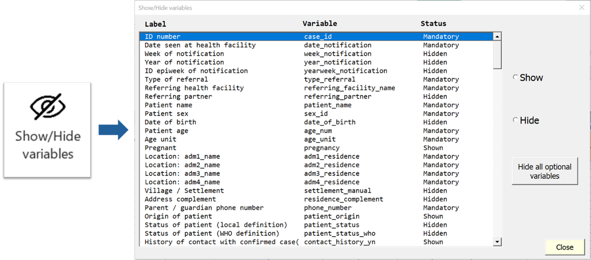
Variable can have three visibility status:
Mandatory: variables cannot be hidden with the Show/Hide
Shown: variables are currently visible but can be hidden by ticking “Hide” on the right
Hide: variables are currently hidden but can be made visible by ticking “Show” on the right
You can hide all optional variables in one go by clicking on the “Hide all optional variables” button.
This is useful if you want to create a minimal linelist and the linelist has a lot of variables shown by default.
After use, the button will change to “Show all optional variables”, to allow the reverse action.
Add rows
By default, the linelist has 200 empty lines. But you can add more when these are filled. Click on the “Add Rows” button to add 200 new empty rows.
Resize table
Click on the “Resize table” button to remove any empty row at the end or in the middle of the linelist.
Clear all filters
To remove all the filters at once, click on the “Clear all filters” button. This is useful if you applied several filters across the table and want to reverse to the full view without missing one.
Sort the variable
If you need to visualize your data by sorting on specific variables, you need to use the sorting function. Place the cursor in a cell of the variable you want to sort (from line 9) and click on the button.
The first time you click, you have a message to confirm the action, once you click yes, you cannot undo it. The first time it sorts by ascending order, if you click again, it will sort by descending order.
Week start
Chose the day that starts the week in your country using the “Week start” button. The selected value will be applied to the whole linelist (calculated epiweeks, as well as in the analyses).
When you click on the button, a pop up window appears, where you can select the day of the week. Then close the window.
Autofit columns
Use this button to improve column width so that the columns take less space. The fit takes into account the label, the length of categories of the variable (if any) and the name of the variable (hidden).
You can manually modify the width of columns in the linelist table to adjust to content the way you would do in any Excel file.
GeoHelper
The GeoHelper is a popup window that helps you entering geographic data surch as the origin of the patient or the name of the facility. It is mostly used to enter data on the patient data sheet, but it is also useful on the Spatio-Temporal analysis sheet.
To use it, place your cursor in a “geo” or “hf” column (you can recognise them thanks to the orange headers), in the admin 1 level. Click on the “GeoHelper” button, or hit the shortcut Ctrl + Shift + G. It opens a window, with several tabs, depending on whether you are in a geo (described by four visible columns) or in hf (described by one visible column).
If you are in a geo section, you will have three tabs that you can use to select administrative levels.
- Cascade: select the admin levels with cascading menus, by selecting one admin level after the other, starting from the highest one.
- Search: search by typing the name (needs at least 3 letters)
- History: quickly find a previous entry entered through the GeoHelper (does not work for data entered using the regular cascading dropdowns).
Once the location has been found, select it and click on “OK”.
Refresh analyses
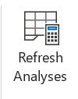
Hit the “Refresh analyses” button to update analyses on all analyses sheets in one go. You should use it whenever you entered new data or when you applied filters to existing data and want to see the analyses on this subset of data.1
1 Do not forget to remove the filters and refresh the analyses at the end to not be confused but the numbers in a couple of days
If the numbers in the analyses are struck, it is because of a new Excel functionality. The documentation is limited and we have not been able to modify the refresh button to take it into account yet. You have two options: use the F9 shortcut before hitting “Refresh analyses”, or un-tick the “Format Stale Values” option in the Calculation options of the Formula tab of Excel options.
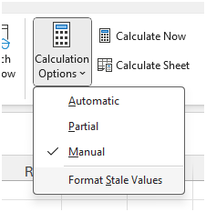
Imports
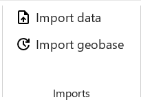
Import data
The « Import Data » button allows you to import data in the linelist. This data must be in a special format typically produced by exporting data from another OutbreakTools linelist for the same disease.
First a window opens to select the file to import. Select it and click on “OK”. At the end, a message will inform you of the success and provide a little import report is you wish so. Inspect it to see if there are any unexpected discrepancies (loosing variables should be investigated!).
3 This export contains all the columns, and as much metadata as possible
2 This data may or may not be anonymised, contain all columns or have extensive metadata depending on how the exports are encoded
If there is already data in the file, a message will inform you of that fact and ask you what you wish to do. It is possible to append the new data at the bottom of the already present data. This is a handy way to create temporary master linelists, or to gather data entered by two data-encoders.
Make sure the data is not overlapping before importing, as the import will just paste the data at the bottom of the existing data, and you would end up with duplicates to clean manually.
Import geobase
The “Import geobase” button allows you to import a geobase in the linelist. If the current linelist had already a geobase, it will be replaced.
The import of the geobase does not affect the data already entered in the linelist, it only fills the modalities offered by dropdown menus. If data is already present in the linelist and the new geobase has different levels, you need to correct them yourselves.
Exports
OutbreakTools linelists have the feature to export data in a separated excel file, to share with partners or perform more advance analyses. The characteristics of the exports (which variables, anonymisation or not, password protected or not etc.) are pre-defined in the setup file that is used to generate the linelist.
The regular exports buttons are available in the “Export section” of the ribbon, and the “Export for migration” is available in the Advanced section of the ribbon.

Export data
While Epicentre linelists should have at minima be an “Anonymous export for MSF” button, the other available exports differ between linelists created.
To export data, click on the “Export Data” button, which opens a popup window, with several options. At the top, you will see buttons for different exports. After clicking on the desired export, a window pops-up for saving the export. If “Export Filtered Data” is selected, a confirmation message will pop-up first to ask you whether this is what you really want.
Once the folder has been selected and after clicking “OK”, a new window opens to confirm the export and, if the export is protected, provide the associated password.
If you forgot the password, click on the “Export Button” again, and then click on the “Show actual private key” to display the password again.
Click on the button “Generate new password” to change the password used by default.
Export analyses
You can export all the tables from the analysis sheets in one document by using the “Export the analysis sheets” button and selecting the directory where you want to save them.
If the analysis are made on filtered data, the tables will be exported as such.
If the export fails with the graphs not exported, it may be a memory problem: close some applications or wait for your antivirus to have finished is scan and try again.
Register and Case report form
You can print a register directly based on the linelist.
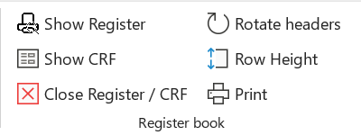
The features from this category only work if you are on a data entry sheet, otherwise you get an error message.
Click on “Show register”; it opens a new sheet that contains all the variables from the linelist. On this sheet, you can use the Data Table features as in the original linelist sheet:
“Add rows” and “Resize table” work exactly the same (except that it adds 10 rows at once)
“Show/Hide variables” works the same but looks a bit different. Instead of “Show” you can select “print” and the orientation of the header. You can also import the parametrisation of hidden/shown columns from the regular linelist table, or change column width.
You can rotate all the labels at once by clicking the “Rotate headers” button. You can define the heigh of the row by clicking directly on “Row height”, a pop-up opens where you can define the heigh.
All labels are editable.
You should hide all calculated variable, they have no place in a printed register book
Once customized, you can hide the sheet by clicking the red cross, all your modifications are saved.
Once ready, you can use the “Print” button to open the print preview view (whether you are on the register sheet or the linelist sheet). If you are satisfied, you can print.
Advanced
There is an “Advanced” button on the right of the ribbon, that opens a popup window with options that are used less often.
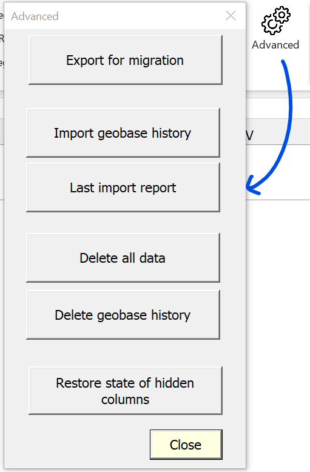
Export for migration
This button exports raw data and metadata for migration to another linelist file.4
4 Whether that is to upgrade versions, move out of a corrupt file or create a temporary master-linelist
You can choose to export the patient data and/or the geobase and/or the history of the geobase (history list in the GeoHelper). There are also options to include metadata on the state of hidden/shown columns (to not have to redo the configuration in the new file), and the updated labels of the custom variables, if you used these variables.

After selecting the options and clicking on “Export”, a window pops-up for saving the export. Select the folder and click on “OK”. Once finished a message appears to ask if you want to close the window.
The export creates up to three files depending on the options you selected:
- a file containing the data and metadata
- a file containing the geobase that is currently in the linelist, as well as the history from the GeoHelper
- a file containing *only the GeoHelper **history*5
5 This option is useful if you want to upgrade to a new version of the geobase but wish to keep your GeoHelper history
Import geobase history
This button allows you to import a file containing the history of the geobase only (such a file was created by exporting the data from migration, see above).
Last Import Report
The button allows you to display the report from the last import made.
Delete data or geobase history
This are a dangerous buttons that allows you to delete data or geobase history from the linelist.
“Delete all data” allows you to remove all the data you entered from the workbook. After clicking, you will have a warning message. To confirm the deletion, you will need to enter the full name of the file.
“Delete geobase history” allows you to empty the table with the geobase history so the list of suggestion of the history method from the GeoHelper will be empty.
Setup
Table management
The buttons of this section provide action on tables within the setup: main table on the Dictionary sheet, table for choices, table for exports, tables for analyses etc.
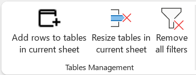
Add rows
This button insert rows at the bottom of the table in the current sheet.
When this functionality is used in the Analyses sheet, you can use the dropdown menu in cell A1 to choose whether you want to add rows to all tables or just one in particular.

Resize table in the current sheet
This button remove empty rows (whether at the end or in the middle).
When this functionality is used in the Analyses sheet, you can use the drop-down menu in cell A1 to choose whether you want to remove empty rows to all tables or just one in particular.
Remove filters
This button clears filters. It is useful if you have applied Excel filters in several columns, no need to track them all one by one, just clear them in one go.
Translation
This section provides functionalities for the Translation sheet of the setup file
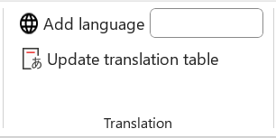
Add language
This button adds a new column to translations sheet, to add a new linelist language.
- Fill the name of the language in the box
- Click on the button: it will add a new empty column on the right of the columns already present.
Update translation table
Click on this button to update the whole translation table. You can use it whether there is only one language or more.
The script will scrap the setup file and import all the fields to be translated into the table, listed in alphabetical order.
At the end, it will open a popup window with information on the update of the translation table.
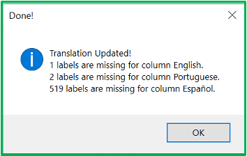
Import
These buttons allow to import data into an empty setup file.
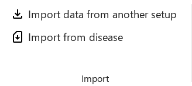
Import data from another setup
Use this button to migrate data from one setup file to another empty setup file.6
6 An upgraded version, or an empty file of the same version in case the original file got corrupted.
- Click on the button; it opens a popup window
- Click on the “Load another setup file” button. It will open a window to select the file to import data from.
- Select what to import from the original by ticking the boxes.
- Decide if you want to run a check-up of the setup file after import by ticking the box or not
- Click on the “Import” button and wait.
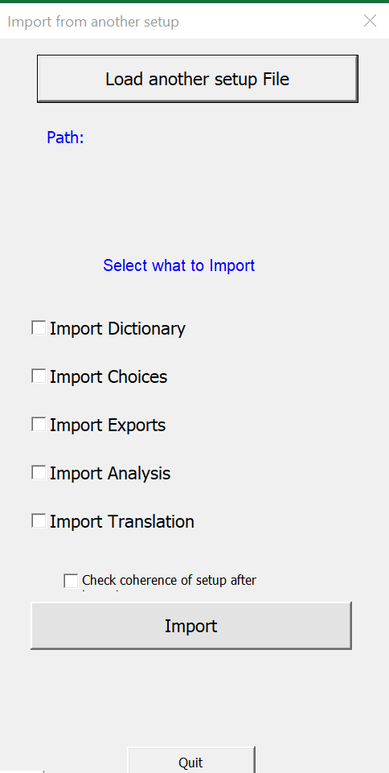
If you are migrating a setup to a new setup file, you should check all boxes to import everything.
You can run the coherence checks now, or do it at a later stage with the Check setup button
Import from disease (in developpment)
This button is used to import a “disease setup” from a disease Master file. This file is being piloted for Epinetwork discussions. You can ignore it for now.
Advanced
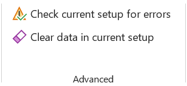
Check current setup for errors
The setup file comes with a series of checks on its content to help you debug your dictionary. After adding major components to your setup file, or before compiling a linelist with the designer, you can should click on the button “Check current setup for errors” to see any errors in the “__checkRep” sheet.
There is a table for each sheet or section (in the case of analyses), with the following three columns:
Incoherences Type preceded by the name of the sheet,
Where?, which shows the name of the sheet or section and the line where the incoherence is located,
Details, which gives details about the incoherence.
There are several types information that could appear in the incoherence column:
Info (in grey): this is not an inconsistency, but simply a piece of information about something that will not block the compilation of the linelist.
Warning (in yellow): these are problems that need to be fixed because there is a real inconsistency or problem. It could be an error in a formula, for example.7
Note (in blue): this is something that has been defined in the setup, but will not be applied, and is therefore not blocking. For example, in the analyses, certain choices are contradictory by design, such as the display of percentages, which is not authorised when you choose to invert the display of the table (horizontal display instead of vertical).
7 Note that the check-up does its best, but some formula errors can be missed and create problems in your formulas. Always test the calculated columns after generating the linelist!
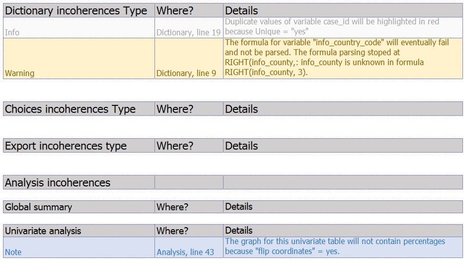
Clear data in current setup
This feature allows you to delete all the data entered in the setup file.
- Click on the button; it opens a popup window to decide which part of the setup you want to clear
- Tick boxes to select sheets to clean
- Click on the “Clear” button. It will open a window to ask you if you are very sure.
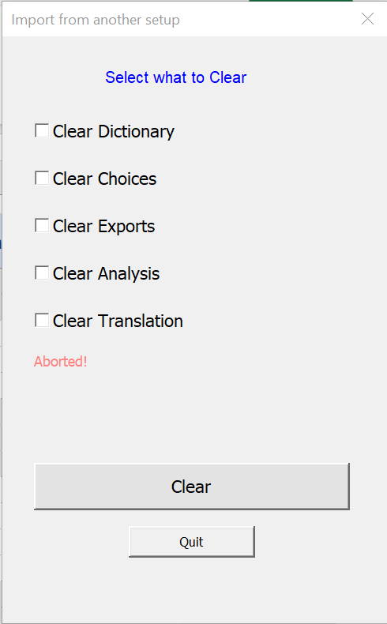
Dev
The dev tab is for the OBT developer and you can ignore it.
Designer
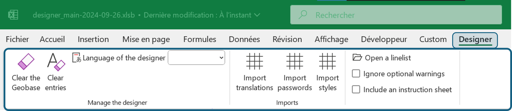
Manage the designer
Clear the geobase
Remove any geobase that was loaded in the designer.
Clear entries
Remove all user entered data from fields.
Language of the designer
Use the dropdown menu to change the language of the designer interface.
Available languages: English, French, Arabic, Spanish and Portuguese.
Imports
Import translations
If the user wishes to modify the linelist interface translations, it is possible to ask for the config file to EpiDS/Yves Amevoin, tweak it and import it with this button.
Import passwords
The designer is loaded with a password table, with private and public keys to protect export if the user want a password-protected export. However, the designer is on Github, in a public repo, so if you compile a linelist that needs a password protection, it is best to ask for the config file to EpiDS/Yves Amevoin and import it using the “Import button”.
Import styles
The designer comes with two default styles for linelist themes. It is possible to personalise it. To do that, ask for the config file to EpiDS/Yves Amevoin, tweak it and import it with this button.